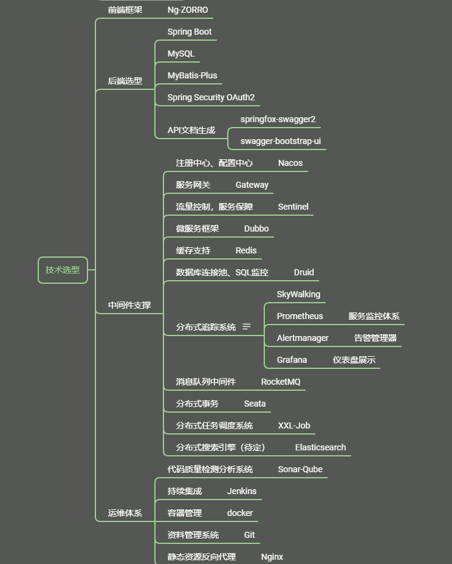

先定一个小目标
有输出的目标：
- 首先，完成一个七牛云 OSS 文件客户端。
- 使用 Electron + Angular 做前端。
- 后端使用 JAVA 套上七牛云官方提供的 SDK 去实现管理。（文件流不走后端服务）
- 第二个目标，完成输出一个可用的 Admin 后台管理页面及配套的 Java 服务端代码。（暂时先不考虑中间件，完成一个最小可用系统）
- 第三个目标，自律性目标，每周任务
- 完成一道算法题，并写出解题思路；
- 学习基础数学知识；
- 寻找并学习一个技术技巧；
- 每周完成一次对外分享产出；
看不见输出的目标：

- 首先，学习数据可视化方向的知识点；
- 沿着上面那幅知识地图一步一个脚印的向前走；
- 学习Hadoop基础；